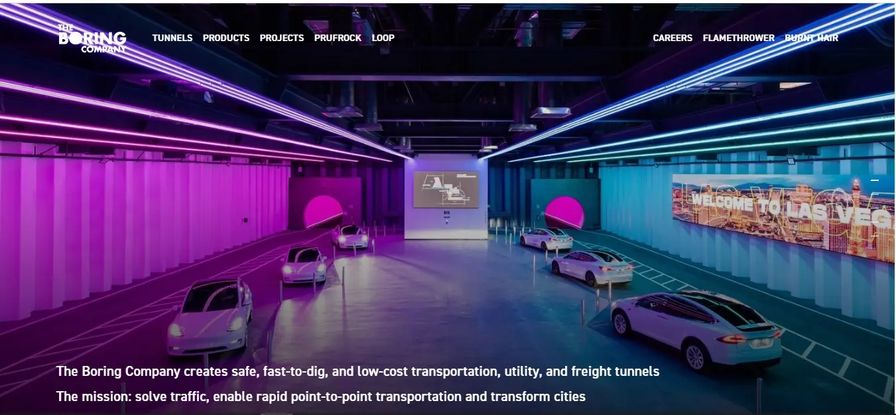
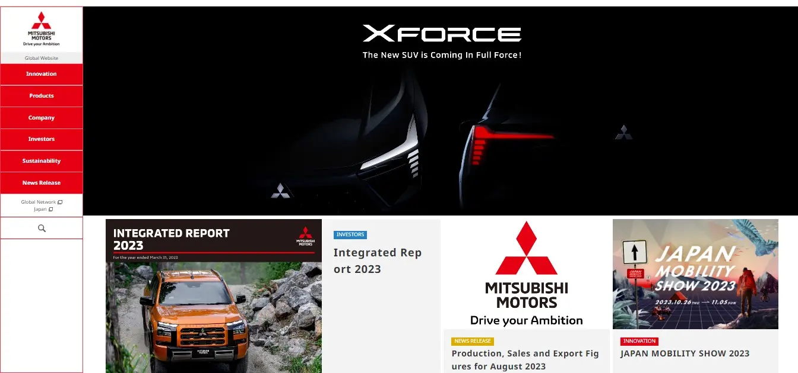
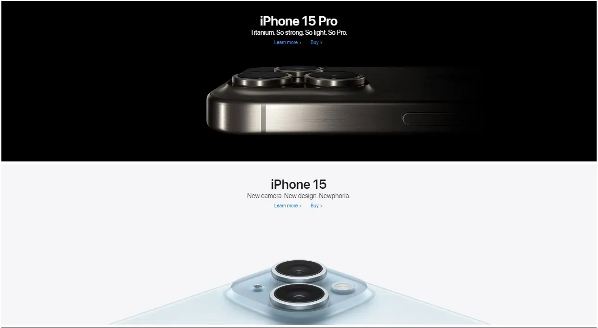

Repetition
Boring Website Here we can see an example of the repetition principle , several objects in the image are repeated, of course, other design principles give deeper harmony to the image. The color contrast is strong and jazzy.
Visual Hierachy
Mitsubishi Website On this page the visual hierarchy is given in the presentation of the boxes of information, the main box is above lightly to the right side, and the contrast of red color (the color of branding) and black is intense. According to the importance of the information box, shows us in descending shape.
Constrast
Apple Website On this page, the contrast is very simple but powerful between black and white, the ad shows us the product where the color of the background and typography color give the information clearly.